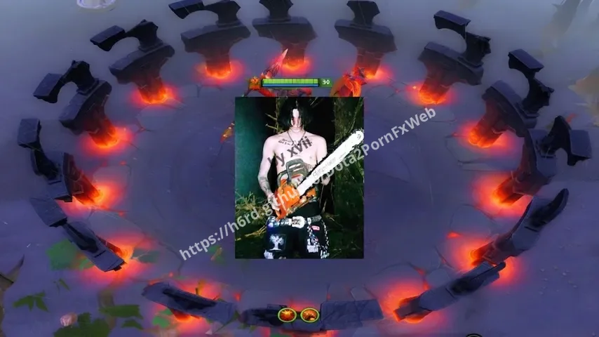

Dota 2 Sounds mods
Custom sounds.
 ReZero Respawn Sound
ReZero Respawn Sound USSR and Germany Horn
USSR and Germany Horn Sora Main Menu
Sora Main Menu Stairs Guy Main Menu
Stairs Guy Main Menu ReZero Subaru Phone Horn
ReZero Subaru Phone Horn Warcraft III / AllStars Voices
Warcraft III / AllStars Voices Dark Carnival Serega Pirat
Dark Carnival Serega Pirat Dark Carnival Team Spirit
Dark Carnival Team Spirit Dark Carnival Dora
Dark Carnival Dora Flash Step Blink
Flash Step Blink Dagon AWP
Dagon AWP Tormentor Amor
Tormentor Amor 1st September Horn
1st September Horn Dagon Revolver
Dagon Revolver Dagon Cobra Kick
Dagon Cobra Kick Dragon Ball Blink
Dragon Ball Blink Winlose Music Suffocation Kit
Winlose Music Suffocation Kit Sound To Battle! From Wot
Sound To Battle! From Wot Ech Cat Sound Game Startup
Ech Cat Sound Game Startup Artifact Voices
Artifact Voices
Marsarenasematary Dagon Awp From Cs 1.6
Dagon Awp From Cs 1.6 Tcoaal Blink Dagger
Tcoaal Blink Dagger